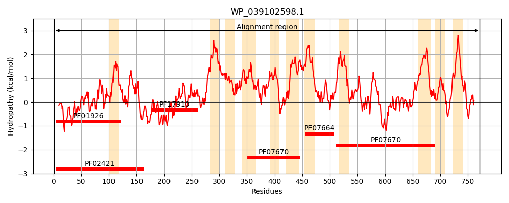
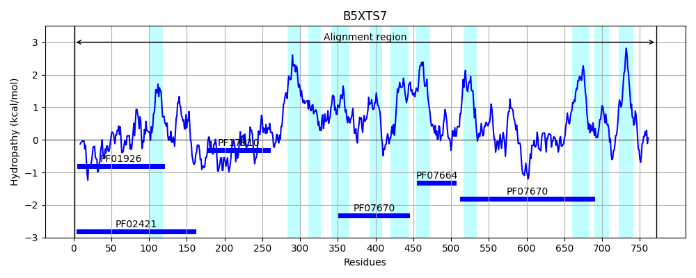
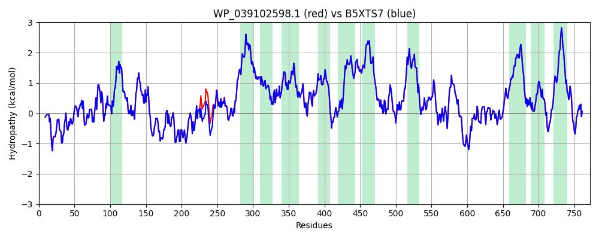

Hit Accession: B5XTS7
Hit TCID: 9.A.8.1.10
Hit Description: gnl|BL_ORD_ID|1934 gnl|TC-DB|B5XTS7|9.A.8.1.10 Ferrous iron transport protein B OS=Klebsiella pneumoniae (strain 342) GN=feoB PE=4 SV=1
Mach Len: 772
e:0.000000
Query TMS Count : 11
Hit TMS Count: 11
TMS-Overlap Score: 11.300000
Predicted Substrates:CHEBI:34754;iron(2+)
BLAST Alignment:
Score: 3905 , Bit scores: 1508 bits, E-value: 0.0e+00, Alignment length: 772, Percentage identity: 100
Query: 1 MKKLTVGLIGNPNSGKTTLFNQLTGARQRVGNWAGVTVERKEGVFATTDHQVTLVDLPGTYSLTTISSQTSLDEQIACHYILSGDADMLINVVDASNLERNLYLTLQLLELGIPCVVALNMLDIAEKQQVRIDIDALAARLGCPVIPLVSTRGRGIEALKIALDRHQANSDIELVHYPQPLLREADLLAQQMSAQIPTRQRRWLGLQMLEGDIYSRAYAGDAADKLDIALANLSDVIDDPALHIADARYQTIAAICDAVSNTLTAEPSRFTAAMDKVILNRFLGLPIFLFVMYLMFLLAINIGGALQPIFDAGSVAVFIHGIQWLGYTLHFPDWLTVFLAQGIGGGINTVLPLVPQIGMMYLFLSFLEDSGYMARAAFVMDRLMQALGLPGKSFVPLIVGFGCNVPSVMGARTLDAPRERLMTIMMAPFMSCGARLAIFAVFAAAFFGQNGALAVFSLYVLGIVMAILTGLMLKHTIMRGEASPFVMELPVYHVPHIKSLIIQTWQRLKGFVLRAGKVIVIVSIFLSALNSFSLSGKVVDNINDSALASVSRVITPVFKPIGVHEDNWQATVGLFTGAMAKEVVVGTLNTLYTAEDIQNEEFNPQTFSLGEELLAAVDETWQGLKDTFSLSVLANPIEASKGDGEMATGAMGVMGSKFGSAAAAYSYLIFVLLYIPCISVMGAIARESSRGWMTFSILWGLNIAYSLSTLYYQTVSFSDHPRYSLVCILAVVLFNVVLFGLLRRARSRVDVSLLATRKTPASCCSSPAGDCH 772
MKKLTVGLIGNPNSGKTTLFNQLTGARQRVGNWAGVTVERKEGVFATTDHQVTLVDLPGTYSLTTISSQTSLDEQIACHYILSGDADMLINVVDASNLERNLYLTLQLLELGIPCVVALNMLDIAEKQQVRIDIDALAARLGCPVIPLVSTRGRGIEALKIALDRHQANSDIELVHYPQPLLREADLLAQQMSAQIPTRQRRWLGLQMLEGDIYSRAYAGDAADKLDIALANLSD IDDPALHIADARYQTIAA+CDAVSNTLTAEPSRFTAAMDKVILNRFLGLPIFLFVMYLMFLLAINIGGALQPIFDAGSVAVFIHGIQWLGYTLHFPDWLTVFLAQGIGGGINTVLPLVPQIGMMYLFLSFLEDSGYMARAAFVMDRLMQALGLPGKSFVPLIVGFGCNVPSVMGARTLDAPRERLMTIMMAPFMSCGARLAIFAVFAAAFFGQNGALAVFSLYVLGIVMAILTGLMLKHTIMRGEASPFVMELPVYHVPHIKSLIIQTWQRLKGFVLRAGKVIVIVSIFLSALNSFSLSGKVVDNINDSALASVSRVITPVFKPIGVHEDNWQATVGLFTGAMAKEVVVGTLNTLYTAEDIQNEEFNPQTFSLGEELLAAVDETWQGLKDTFSLSVLANPIEASKGDGEMATGAMGVMGSKFGSAAAAYSYLIFVLLYIPCISVMGAIARESSRGWMTFSILWGLNIAYSLSTLYYQTVSFSDHPRYSLVCILAVVLFNVVLFGLLRRARSRVDVSLLATRKTPASCCSSPAGDCH
Sbjct: 1 MKKLTVGLIGNPNSGKTTLFNQLTGARQRVGNWAGVTVERKEGVFATTDHQVTLVDLPGTYSLTTISSQTSLDEQIACHYILSGDADMLINVVDASNLERNLYLTLQLLELGIPCVVALNMLDIAEKQQVRIDIDALAARLGCPVIPLVSTRGRGIEALKIALDRHQANSDIELVHYPQPLLREADLLAQQMSAQIPTRQRRWLGLQMLEGDIYSRAYAGDAADKLDIALANLSDEIDDPALHIADARYQTIAAVCDAVSNTLTAEPSRFTAAMDKVILNRFLGLPIFLFVMYLMFLLAINIGGALQPIFDAGSVAVFIHGIQWLGYTLHFPDWLTVFLAQGIGGGINTVLPLVPQIGMMYLFLSFLEDSGYMARAAFVMDRLMQALGLPGKSFVPLIVGFGCNVPSVMGARTLDAPRERLMTIMMAPFMSCGARLAIFAVFAAAFFGQNGALAVFSLYVLGIVMAILTGLMLKHTIMRGEASPFVMELPVYHVPHIKSLIIQTWQRLKGFVLRAGKVIVIVSIFLSALNSFSLSGKVVDNINDSALASVSRVITPVFKPIGVHEDNWQATVGLFTGAMAKEVVVGTLNTLYTAEDIQNEEFNPQTFSLGEELLAAVDETWQGLKDTFSLSVLANPIEASKGDGEMATGAMGVMGSKFGSAAAAYSYLIFVLLYIPCISVMGAIARESSRGWMTFSILWGLNIAYSLSTLYYQTVSFSDHPRYSLVCILAVVLFNVVLFGLLRRARSRVDVSLLATRKTPASCCSSPAGDCH 772 | Protein Hydropathy Plots: |
|---|
|  |  |
Pairwise Alignment-Hydropathy Plot:
|
|---|
|  |